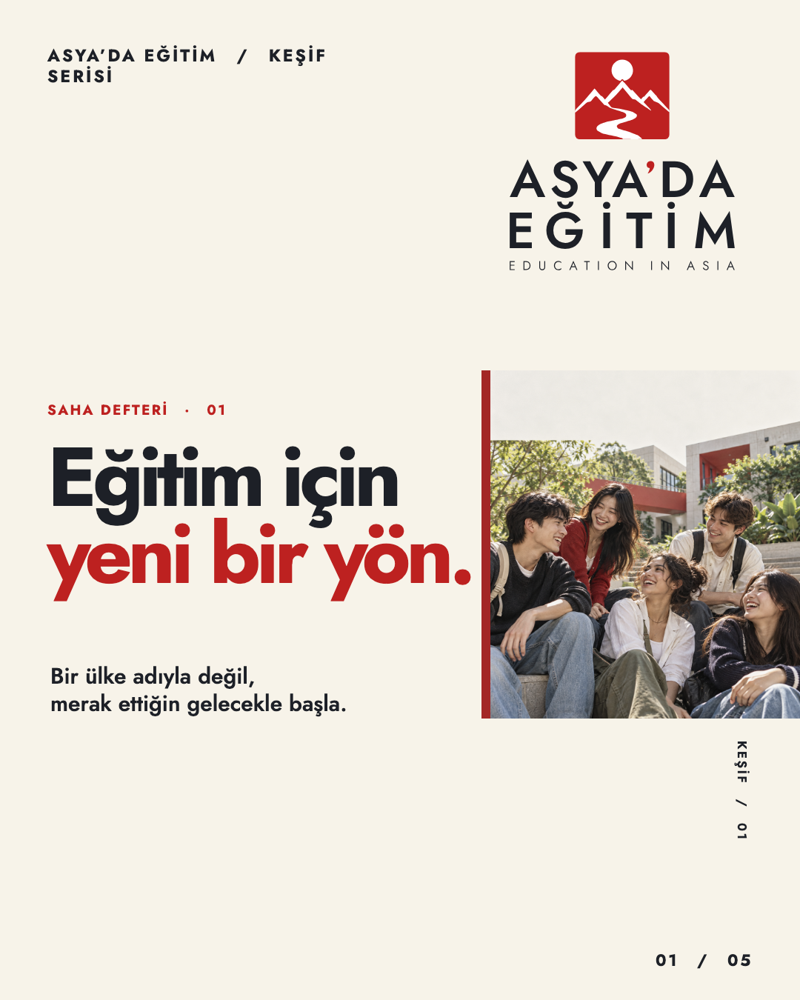
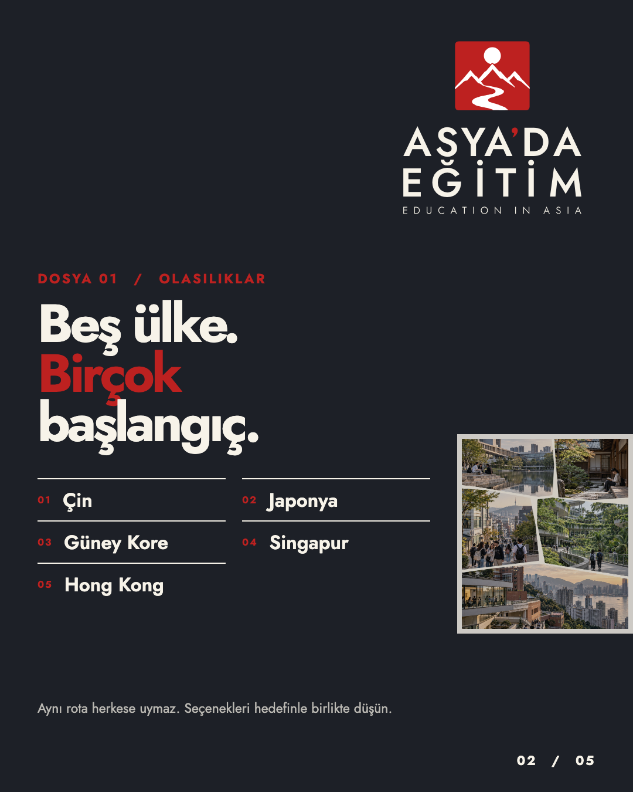
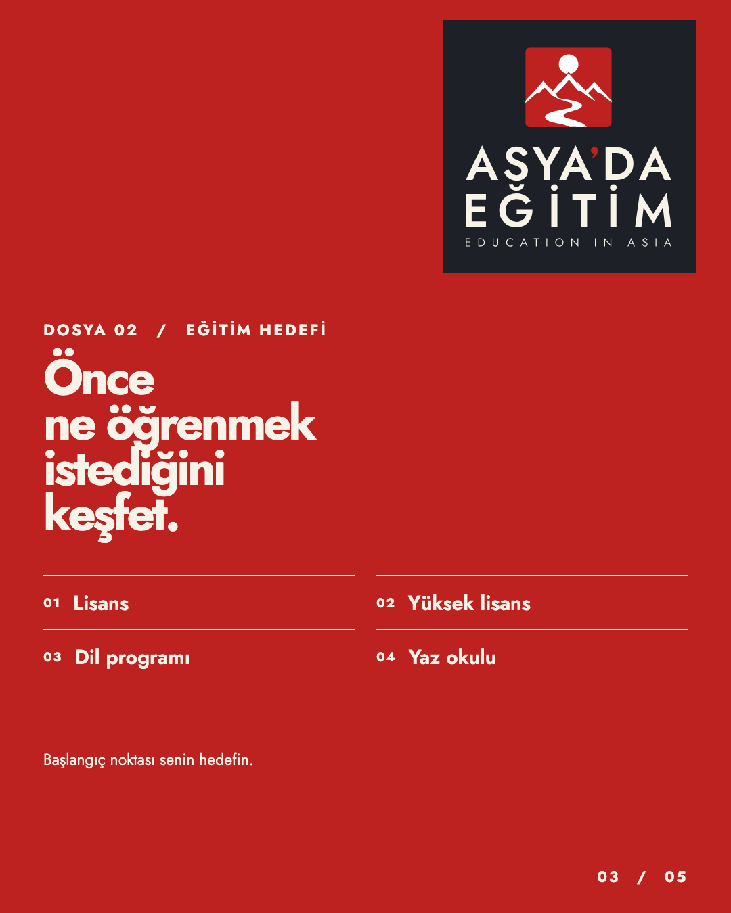
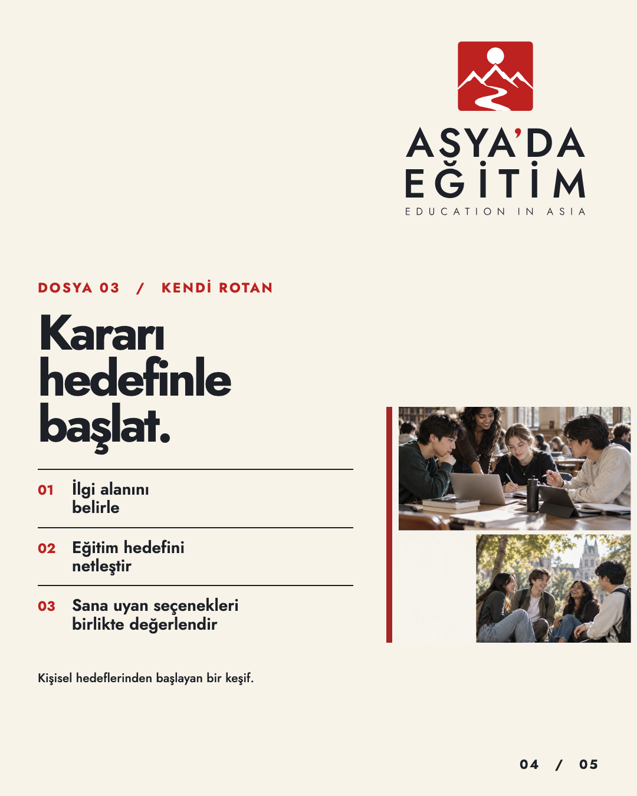
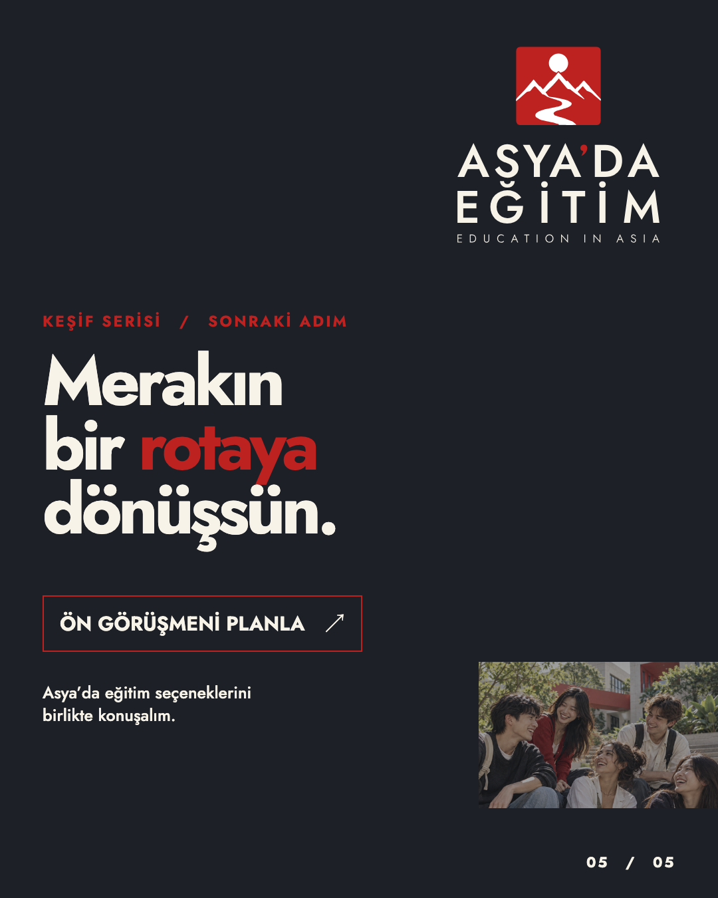

ASYA’DA EĞİTİM / KEŞİF SERİSİ
Önceki görsel kalıptan bilinçli biçimde ayrılan, saha dosyası / editoryal notlar yaklaşımı. Renkli tam zeminli posterler yerine numaralı dosyalar, kenar notları, kayıt çizgileri ve fotoğraf pencereleriyle ilerliyor. Bu bir konsept denemesidir; Instagram’da yayınlanmadı.

Görseller atmosfer amaçlı yapay zekâ üretimidir; belirli kampüs veya ülkelerin belgesel görüntüsü değildir.
Yaklaşık Instagram gönderi simülasyonu, 1080 × 1350 px (4:5). Carousel okları veya küçük görsellerle gezin.



